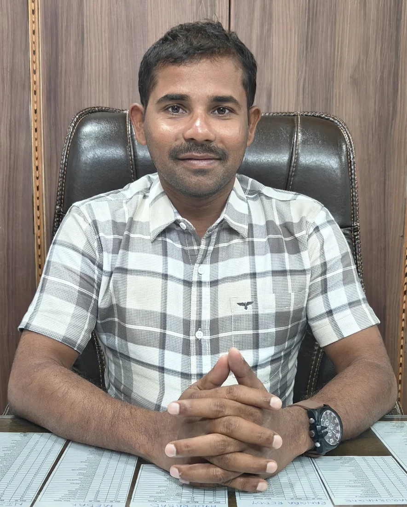

MANAGING DIRECTOR
Dr. Nagara
Ramesh
Founder of RNR Civil Surveyors, Hyderabad
Dr. Ramesh leads a team that helps landowners, banks and engineers answer a practical question: where do the boundaries and features shown on paper lie on the ground?

FIELD PRACTICE
Connecting land records with field measurements
His work includes complex property identification and demarcation. RNR’s surveyors study Tippan sketches, village maps and Sethwar records, then compare those records with features and measurements collected on site.
Building the next generation of surveyors
Under his leadership, the company provides hands-on training in DGPS, Total Station and survey drawing preparation. Field sessions give trainees practice setting up instruments, observing points and working with survey data.